<title>명절 밥상 이어폰 콘티</title>
<meta name="claude:viewport-fit-sides" content="cover">
<link rel="preconnect" href="https://fonts.googleapis.com">
<link rel="preconnect" href="https://fonts.gstatic.com" crossorigin>
<link href="https://fonts.googleapis.com/css2?family=IBM+Plex+Sans+KR:wght@500;600&family=Noto+Sans+KR:wght@400;500;700&display=swap" rel="stylesheet">
<style>
:root {
  /* 셀라돈(제품 색) 하나를 강조로, 나머지는 밥상 사진을 가리지 않는 차분한 회색. 한 열 문서 + 그림 격자 */
  --bg: #f4f5f3; --surface: #ffffff; --ink: #1d2320; --muted: #5d6762; --line: #dde2de; --accent: #4f7d68; --accent-soft: #e3eee8;
  --display: "IBM Plex Sans KR", "Noto Sans KR", system-ui, sans-serif; --body: "Noto Sans KR", system-ui, sans-serif;
  color-scheme: light;
}
@media (prefers-color-scheme: dark) { :root:not([data-theme="light"]) {
  --bg: #121614; --surface: #1a1f1c; --ink: #e8ece9; --muted: #9aa59f; --line: #2c3430; --accent: #8cc0a6; --accent-soft: #1f2d26; color-scheme: dark; } }
:root[data-theme="dark"] { --bg: #121614; --surface: #1a1f1c; --ink: #e8ece9; --muted: #9aa59f; --line: #2c3430; --accent: #8cc0a6; --accent-soft: #1f2d26; color-scheme: dark; }
* { box-sizing: border-box; }
body { margin: 0; background: var(--bg); color: var(--ink); font: 400 16px/1.65 var(--body); }
main { max-width: 1120px; margin: 0 auto; padding-block: 32px 64px; padding-left: max(16px, env(safe-area-inset-left, 0px)); padding-right: max(16px, env(safe-area-inset-right, 0px)); display: grid; gap: 40px; }
main > * { min-width: 0; }
h1, h2 { font-family: var(--display); font-weight: 600; text-wrap: balance; margin: 0; }
h1 { font-size: 28px; line-height: 1.3; }
h2 { font-size: 20px; }
p { margin: 0; max-width: 68ch; }
.lead { display: grid; gap: 10px; }
.lead .sub { color: var(--muted); }
.ask { display: grid; gap: 12px; grid-template-columns: repeat(auto-fit, minmax(240px, 1fr)); }
.ask div { background: var(--surface); border: 1px solid var(--line); border-left: 4px solid var(--accent); border-radius: 8px; padding: 14px 16px; display: grid; gap: 4px; }
.ask b { font-family: var(--display); font-weight: 600; }
.ask span { color: var(--muted); font-size: 14px; }
section { display: grid; gap: 14px; }
.grid { display: grid; gap: 14px; grid-template-columns: repeat(auto-fill, minmax(200px, 1fr)); }
.opts { display: grid; gap: 14px; grid-template-columns: repeat(auto-fill, minmax(220px, 1fr)); }
figure { margin: 0; background: var(--surface); border: 1px solid var(--line); border-radius: 8px; overflow: hidden; display: grid; grid-template-rows: auto 1fr; }
figure img { width: 100%; display: block; aspect-ratio: 9 / 16; object-fit: cover; background: var(--line); }
figcaption { padding: 10px 12px 12px; display: grid; gap: 4px; font-size: 14px; }
.cut .t { font: 600 13px/1.4 var(--display); color: var(--accent); font-variant-numeric: tabular-nums; }
.cut .line { font-style: italic; color: var(--muted); }
.opt b { font-family: var(--display); font-weight: 600; font-size: 15px; }
.opt .pick { color: var(--muted); font-size: 13px; }
table { border-collapse: collapse; width: 100%; background: var(--surface); border: 1px solid var(--line); border-radius: 8px; overflow: hidden; font-size: 15px; }
th, td { text-align: left; padding: 10px 14px; border-bottom: 1px solid var(--line); vertical-align: top; }
th { width: 9.5em; color: var(--muted); font-weight: 500; }
td.num { font-variant-numeric: tabular-nums; }
tr:last-child th, tr:last-child td { border-bottom: 0; }
.wrap { overflow-x: auto; }
ul { margin: 0; padding-left: 1.2em; display: grid; gap: 6px; max-width: 72ch; }
.note { color: var(--muted); font-size: 14px; }
</style>
<main lang="ko">
  <header class="lead">
    <h1>셋째 편 「명절 밥상 이어폰」 — 영상을 굽기 전에 보실 것</h1>
    <p>노이즈캔슬링을 가장 어려운 곳, 한국 명절 밥상에서 시험한 가상 이어폰 광고입니다. 9:16 세로 23.2초이고 화면 글과 말은 모두 영어입니다. 11월 27일(금) 아침 8시에 올릴 자리입니다.</p>
    <p class="sub">아래 그림은 컷마다 영상의 첫 장면이 될 정지 그림입니다. 영상 크레딧은 아직 하나도 쓰지 않았습니다.</p>
  </header>

  <section aria-labelledby="ask-h">
    <h2 id="ask-h">여쭙는 것 세 가지</h2>
    <div class="ask">
      <div><b>1. 브랜드 이름</b><span>GOYO · nunchi · TACET 가운데 하나. 검수자 둘의 고름이 갈렸습니다.</span></div>
      <div><b>2. 끝 화면</b><span>어둡게(A) 또는 밝게(B). 이것도 갈렸습니다.</span></div>
      <div><b>3. 영상 굽기 승인</b><span>먼저 세 컷 시험 묶음 308크레딧, 괜찮으면 나머지를 굽습니다. 한 벌 946크레딧, 다시 굽기를 넣어 약 1,400크레딧입니다.</span></div>
    </div>
  </section>

  <section aria-labelledby="cuts-h">
    <h2 id="cuts-h">이미지 콘티 아홉 컷</h2>
    <div class="grid">
<figure class="cut"><figcaption><span class="t">0.0초 · C1</span><span class="what">고모의 첫 질문. 만두를 입으로 가져가던 서진에게 고모가 전을 얹어 주며 묻는다.</span><span class="line">So… any wedding plans?</span></figcaption></figure>
<figure class="cut">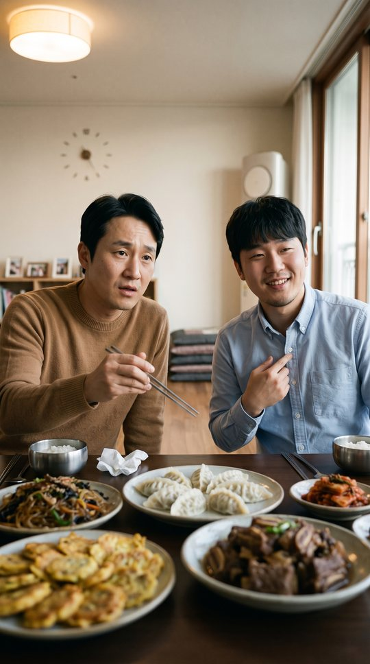<figcaption><span class="t">2.8초 · C2</span><span class="what">맞은편 삼촌과 사촌이 한꺼번에 말을 보탠다. 자막이 쌓인다.</span><span class="line">You look thin. Eating okay? / I got promoted, you know.</span></figcaption></figure>
<figure class="cut">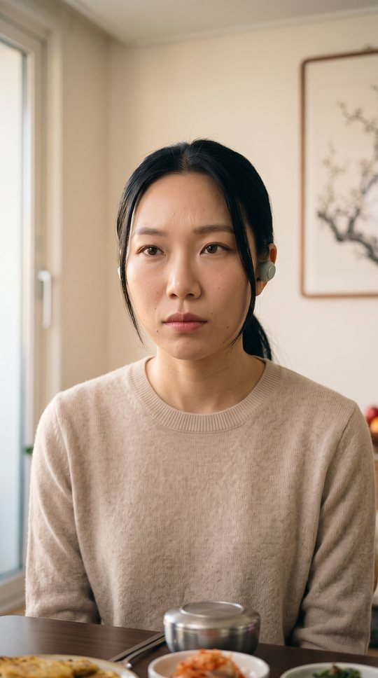<figcaption><span class="t">5.4초 · C3</span><span class="what">질문이 겹쳐 빽빽해진다. 서진은 참는 얼굴로 손을 왼쪽 귀로 올린다.</span><span class="line">Seeing anyone yet?</span></figcaption></figure>
<figure class="cut">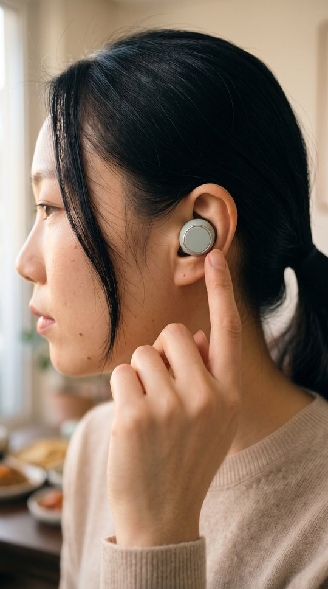<figcaption><span class="t">8.0초 · C3b</span><span class="what">귀 접사. 손끝으로 이어폰을 톡 누르는 순간 목소리와 쌓인 자막이 한꺼번에 사라진다.</span><span class="line">(톡 — 고요)</span></figcaption></figure>
<figure class="cut"><figcaption><span class="t">9.0초 · C4</span><span class="what">고요. 친척들은 입만 움직이고 서진은 눈을 감고 만두를 먹는다. 밥그릇 옆에 작은 케이스가 있다.</span><span class="line">(씹는 소리 하나)</span></figcaption></figure>
<figure class="cut">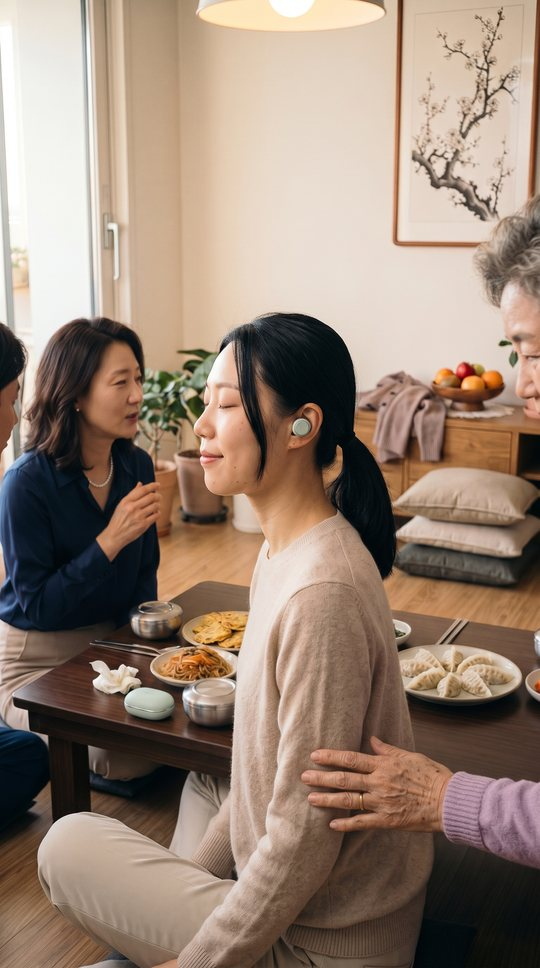<figcaption><span class="t">12.4초 · C5</span><span class="what">할머니 손이 어깨를 톡 친다. 서진이 왼쪽 이어폰을 빼자 할머니 목소리가 들린다.</span><span class="line">Eat more.</span></figcaption></figure>
<figure class="cut">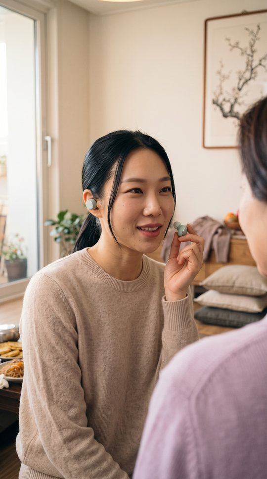<figcaption><span class="t">15.4초 · C6</span><span class="what">서진이 할머니에게 답하고, 고모가 다시 말을 꺼내자 고모 쪽을 돌아보며 이어폰을 귀로 올린다.</span><span class="line">Okay, Grandma. / Your boyfriend—</span></figcaption></figure>
<figure class="cut">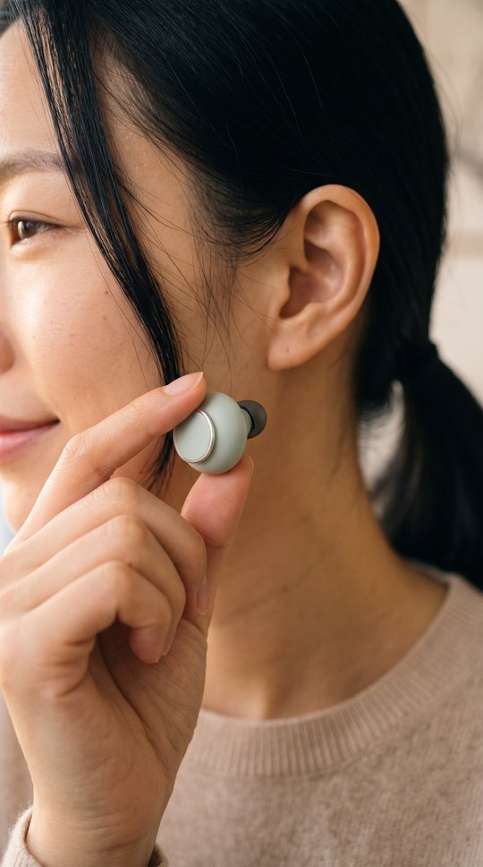<figcaption><span class="t">17.2초 · C6b</span><span class="what">귀 접사(C3b와 짝). 이어폰을 다시 끼우는 순간 고모의 말이 끊긴다.</span><span class="line">(딸깍 — 고요)</span></figcaption></figure>
<figure class="cut">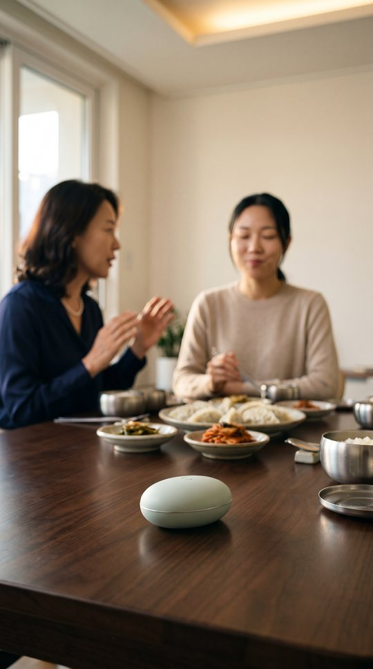<figcaption><span class="t">18.0초 · C7</span><span class="what">반찬 사이의 케이스. 뒤로 흐리게 서진은 편안히 씹고 고모의 입은 계속 움직인다. 18.3초에 브랜드 이름, 20.6초에 끝 화면.</span><span class="line">Hear only what matters.</span></figcaption></figure>
    </div>
  </section>

  <section aria-labelledby="names-h">
    <h2 id="names-h">1. 브랜드 이름 시안 — 끝 컷 위에 얹은 모습</h2>
    <p class="note">이름은 글꼴로 치지 않고 기하 획으로 그렸습니다. 두 사람 머리 위 벽(앱 단추에 가리지 않는 띠)에 둡니다.</p>
    <div class="opts">
<figure class="opt"><figcaption><b>A · GOYO</b><span>한국말 「고요」. 두 O를 이어폰의 바깥 면으로 그렸다.</span><span class="pick">Fable이 골랐다 — 속을 채운 두 원이 이어폰 얼굴과 닮고, 굵어서 가장 잘 읽히며, 뜻이 고요 장면과 이어진다.</span></figcaption></figure>
<figure class="opt">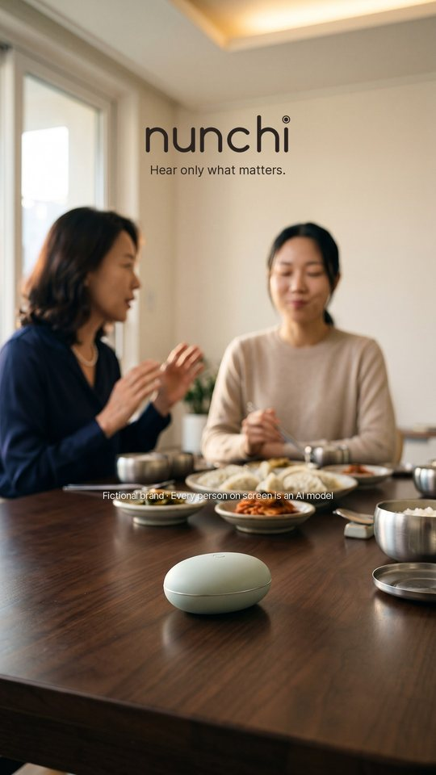<figcaption><b>B · nunchi</b><span>한국말 「눈치」. 누구 말을 들여보낼지 아는 이어폰. i의 점이 케이스 뚜껑의 원이다.</span><span class="pick">GPT가 골랐다 — 둥근 획이 케이스와 이어지고 휴대폰에서 가장 잘 읽힌다.</span></figcaption></figure>
<figure class="opt">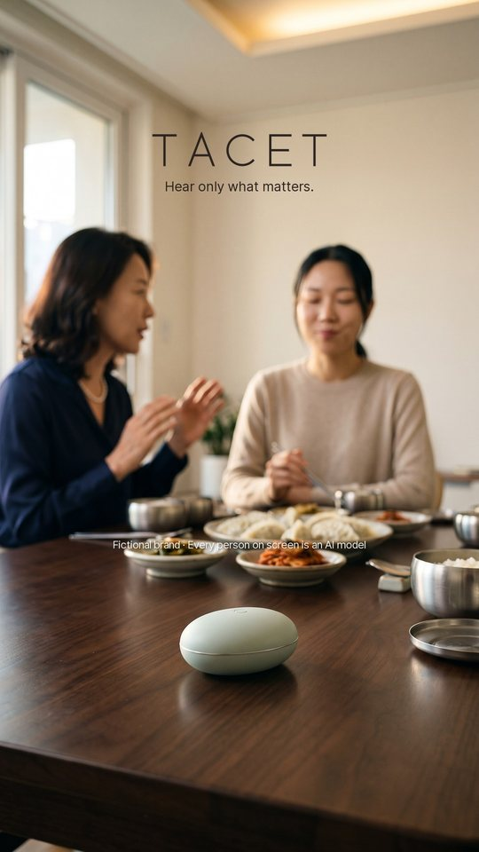<figcaption><b>C · TACET</b><span>악보 말로 「그 악기는 쉰다」. 넓은 자간의 가는 대문자.</span><span class="pick">고른 검수자 없음.</span></figcaption></figure>
    </div>
  </section>

  <section aria-labelledby="ends-h">
    <h2 id="ends-h">2. 끝 화면 시안</h2>
    <div class="opts">
<figure class="opt">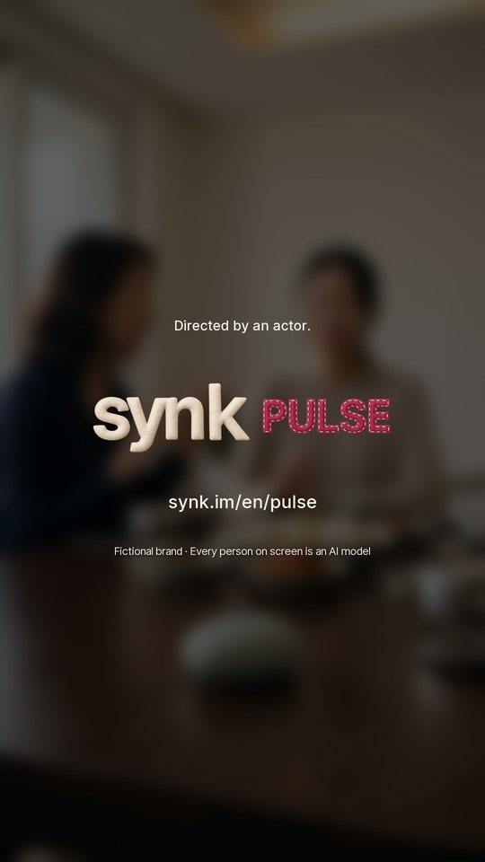<figcaption><b>A · 어둡게</b><span>마지막 장면을 어둡게 흐리고 종이색 로고.</span><span class="pick">Fable이 골랐다 — 두 번째 톡과 함께 어두워져 소리가 꺼진 느낌이 나고, 가상 브랜드와 SYNK PULSE가 갈린다.</span></figcaption></figure>
<figure class="opt">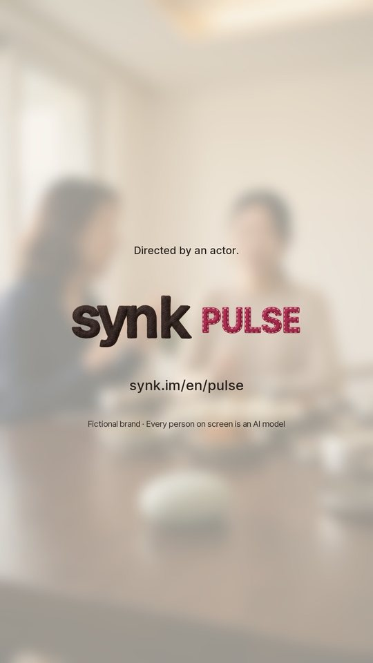<figcaption><b>B · 밝게</b><span>같은 장면을 밝게 흐리고 잉크색 로고.</span><span class="pick">GPT가 골랐다 — 밥상의 따뜻한 색에서 자연스럽게 넘어가고 로고와 주소가 선명하다.</span></figcaption></figure>
    </div>
  </section>

  <section aria-labelledby="cost-h">
    <h2 id="cost-h">3. 영상 굽기 견적</h2>
    <div class="wrap"><table>
      <tr><th>계정</th><td>드리미나 unmet23, 720p 초당 22크레딧. 11월 17일 18:50 무렵 잔액 23,027크레딧이었고(지금 값은 확인 안 함), 12월 16일에 사라집니다. 둘째 편과 「Still」도 같은 계정을 씁니다.</td></tr>
      <tr><th>시험 묶음(먼저)</th><td class="num">C2 · C3b · C4 — 두 사람이 겹쳐 말하는 컷, 이어폰 톡, 소리를 끈 넓은 컷. 14초 = 308크레딧</td></tr>
      <tr><th>한 벌</th><td class="num">9판 43초(C1 5 · C2 5 · C3 5 · C3b 4 · C4 5 · C5 5 · C6 4 · C6b 4 · C7 6) = 946크레딧</td></tr>
      <tr><th>예상</th><td class="num">다시 굽기를 넣어 약 1,400크레딧. 모든 컷을 두 판씩 구우면 1,892크레딧</td></tr>
    </table></div>
  </section>

  <section aria-labelledby="rev-h">
    <h2 id="rev-h">검수 경과와 남은 위험</h2>
    <ul>
      <li>Fable 5.2가 두 번(1판, 2판), GPT가 한 번(3판) 맹검했습니다. 판정은 세 번 모두 「고친 뒤 굽는다」였고, 지적마다 컷표와 지시문을 고쳐 다시 구웠습니다(그림 약 50장, 크레딧 0).</li>
      <li>고친 것: 서진을 광고 모델답게 꾸미고, 방에 명절 어수선함을 더하고, 케이스를 앞 컷에 미리 심고, 할머니 옆얼굴을 넣고, 자막을 한 줄로 줄이고, 끝 화면을 늦춰 브랜드가 2.3초 보이게 하고, 다시 끼우는 귀 접사(C6b)를 더했습니다.</li>
      <li>남은 위험 하나: 마지막 컷의 케이스가 실제보다 커 보입니다(밥공기 너비의 80%쯤, 실제는 절반). 지시문을 여러 번 고쳐도 더 줄지 않았습니다.</li>
      <li>남은 위험 둘: C6의 얼굴 빛이 고르게 평평합니다. 창을 등지고 할머니 쪽을 보는 구도라 생깁니다.</li>
      <li>카본 검수는 다섯 번 모두 답이 사라져 받지 못했습니다(까닭은 못 가림). 그래서 GPT 눈으로 대신 봤습니다.</li>
      <li>승인해 주시면 굽기 전 검수(Fable 관문)를 거쳐 시험 묶음부터 굽고, 편집과 소리를 마친 판을 11월 26일까지 보여 드립니다.</li>
    </ul>
    <p class="note">편 폴더: docs/마케팅/PULSE_영어시험_20261117/03_명절밥상_이어폰 (README의 「고른 판」 표와 검수 기록)</p>
  </section>
</main>
